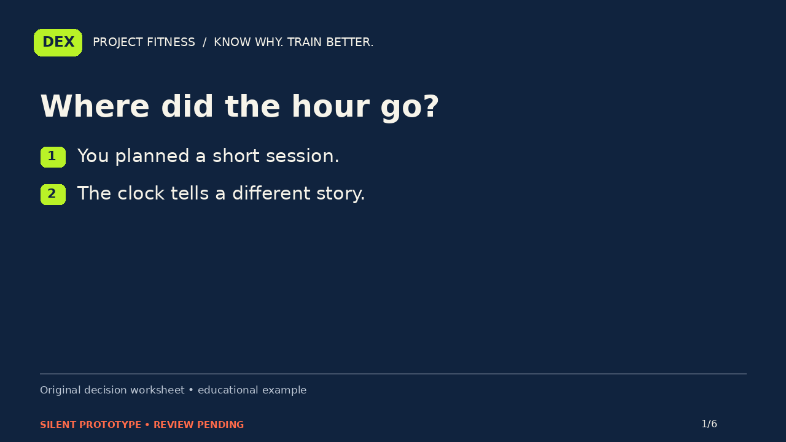
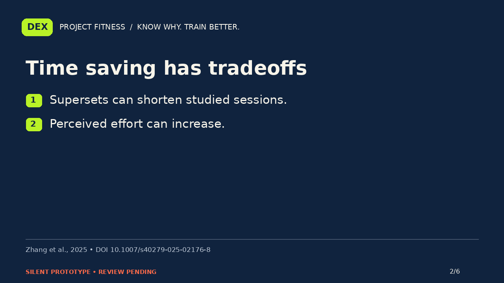
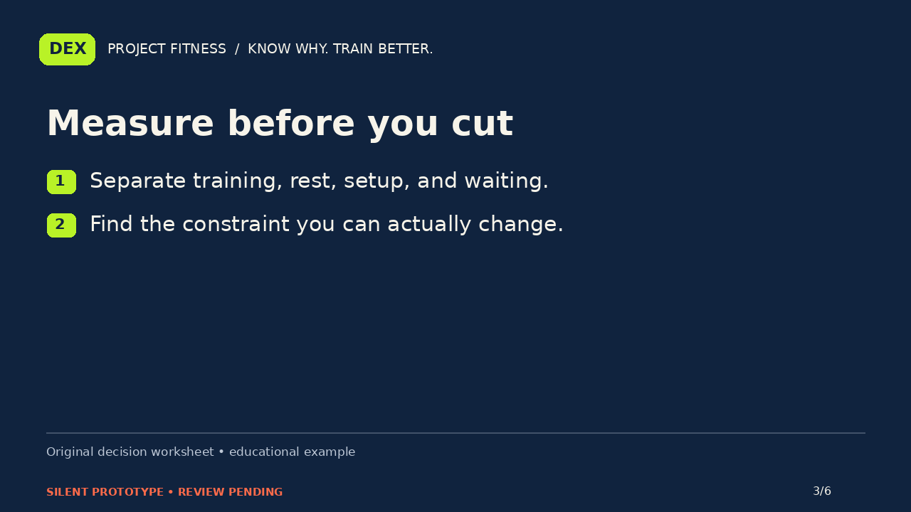
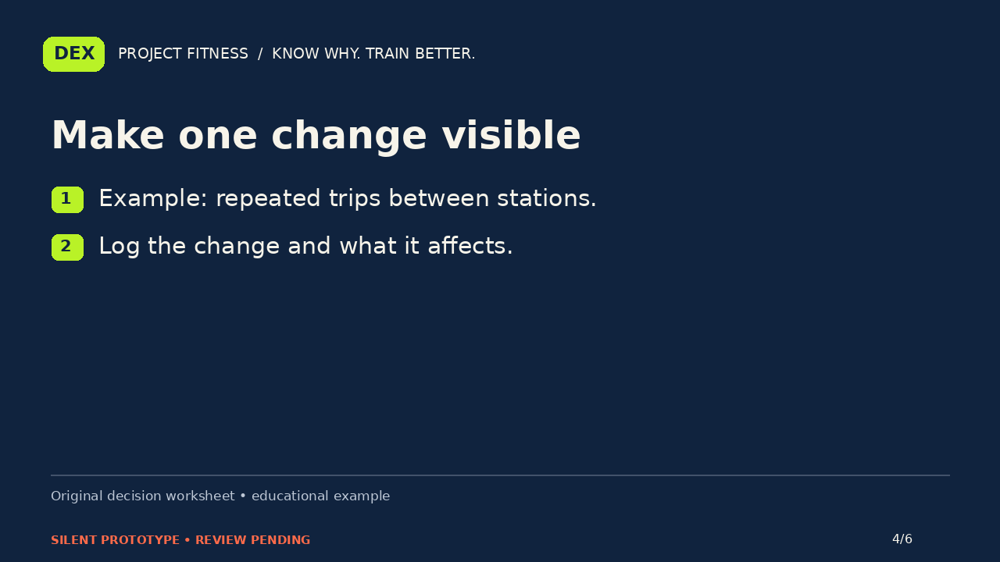
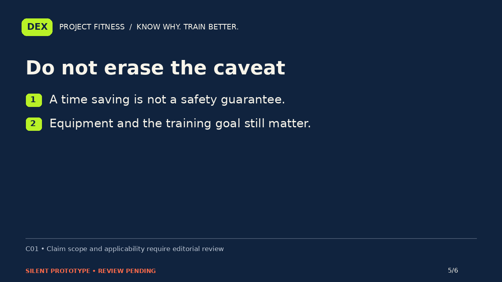
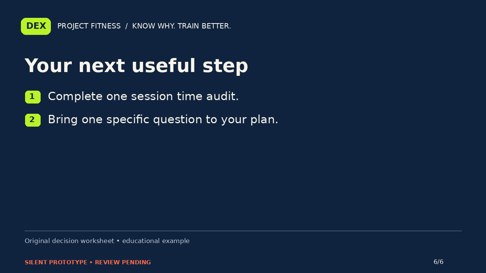

PROJECT FITNESS / P01-time / B
Your workout runs long. What should you change first?
Silent storyboard prototype. Narration and editorial review are pending.
Narration script · Draft captions

You planned a short workout. Somehow, the session took much longer. Before you change every exercise, ask a smaller question: where did the time actually go? This is an audit of your routine, not a promise of identical results in half the time.

Research on supersets suggests that some set arrangements can shorten sessions, while feeling more demanding. The reviewed protocols differ, and long-term evidence is smaller than the total study count might suggest. That makes supersets an option to evaluate, not a universal replacement for traditional sets.

For one typical session, note time spent training, resting, setting up equipment, and waiting. These are different problems. A crowded gym and a long exercise list call for different decisions. The worksheet helps you see the constraint before choosing an adjustment.

Imagine the main delay is repeatedly crossing the gym to find equipment. That observation gives you a specific question to discuss when adapting your plan. Record the change, session length, and what felt different. This example does not tell you to rush every rest period.

A shorter session does not automatically mean the same outcome for every person or exercise pairing. This evidence does not establish your safest rest period or an appropriate individual program. Keep the actual goal, equipment access, and the limits of the research in the decision.

Your next step is simple: complete one session time audit and identify the biggest source of delay. Then decide which question deserves an answer. You do not need to redesign everything to start understanding the problem. Know why. Train better.